চন্দ্রদ্বীপের গল্পে মানুষ আসে নদীপথ ধরে, কেউ আসে নতুন বসতির খোঁজে, কেউ আসে পুরোনো কোনো স্মৃতির টানে। কারও হাতে থাকে নৌকার হাল, কারও হাতে জাল, কারও কাঁধে সংসারের ভার। কেউ জমির মালিক, কেউ সেই জমিতে ঘাম ঝরানো শ্রমিক। তাদের প্রত্যেকের জীবন আলাদা। অথচ সবাই মিলে তারা গড়ে তোলে বিঘাই নামের একটি জনপদ।
এই জনপদের মানুষদের মুখ মনে রাখার জন্য তাদের কাছে একটু থামতে হয়। কারও চোখে নদীর স্মৃতি, কারও মুখে হারানো সময়ের ছায়া, কারও নীরবতায় জমে থাকে এমন কথা, যা সে কাউকে বলতে পারে না।
মানিকজান
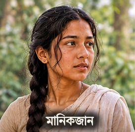
মানিকজান উপন্যাসের কেন্দ্রীয় চরিত্র। প্রথম পর্বে তার বয়স ষোলো-সতেরো। বয়স বাড়ার সঙ্গে সঙ্গে তার জগৎও বদলায়; পরবর্তী সময়ে সে বিশ-বাইশ বছরের তরুণী। সে চারপাশের মানুষ ও প্রকৃতিকে গভীর মনোযোগে দেখে। নদীর জল, মানুষের মুখ, ঘরের ভেতরের ছোটখাটো ঘটনা—সবকিছু তার মনে আলাদা দাগ রেখে যায়। কোনো কোনো ঘটনার আগেই তার মনে অজানা এক অনুভূতি জেগে ওঠে। বিঘাইয়ের বদলে যাওয়া জীবন, নদীর স্মৃতি ও মানুষের সম্পর্কের মধ্য দিয়ে মানিকজানের নিজের জীবনও এগিয়ে চলে।
হাচনদ্দি
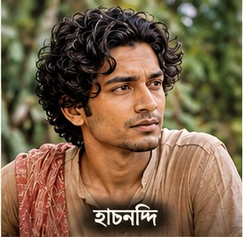
হাচনদ্দির বয়স আটাশ। মাঠিভাঙা গ্রাম থেকে বিঘাইয়ের দূরত্ব সাড়ে তিন ক্রোশ। সেখান থেকেই সে আসে বাদামতলা খালের কাছে। তার বাবা লালগাজী একসময় নৌকায় করে এই খালে মাছ ধরতে এসেছিলেন। কলেরায় তাঁর মৃত্যু হয়। খালের ধারেই তাঁর কবর। হাচনদ্দি বাবার কবর দেখতে আসে বলে সবাই জানে। কিন্তু তার আসার পেছনে মানিকজানকে দেখার আকাঙ্ক্ষাও কাজ করে। সে শান্ত স্বভাবের, কোমল চেহারার, ছোটখাটো গড়নের যুবক। তার ভালোবাসা প্রকাশ পায় অপেক্ষায়, আসা-যাওয়ায় আর অল্প কথায়।
মোন্তাজ
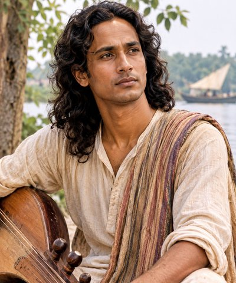
উপন্যাসে প্রবেশের সময় মোন্তাজের বয়স প্রায় পঁয়ত্রিশ। তিনি দীর্ঘদেহী, লম্বা চুল রাখেন। প্রশস্ত ললাট, লম্বাটে মুখ আর সুদর্শন চেহারা। তাঁর কণ্ঠে গান আছে। গান গাইতে ভালোবাসেন। চেহারায় এমন এক আকর্ষণ আছে, যা সহজেই মানুষের মনে থেকে যায়।
হাচনদ্দির মৃত্যুর পর মোন্তাজই ধীরে ধীরে মানিকজানের ঘনিষ্ঠ বন্ধু ও প্রেমিক হয়ে ওঠেন। তাঁদের সম্পর্কের মধ্যে বন্ধুত্ব, নির্ভরতা ও প্রেম—তিনটি অনুভূতিই জায়গা পায়।
কেরামত মাঝি
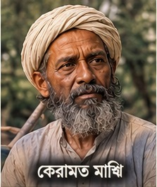
কেরামত মাঝি মানিকজানের বাবা। তিনি নৌকার মালিক ও মাঝি। তেরো পরিবারের হিজরতের নৌবহরের নেতৃত্ব তাঁর হাতে। নদীর স্রোত, খালের বাঁক, জলের গভীরতা আর বাতাসের গতিপথ তাঁর চেনা। দীর্ঘ যাত্রার স্মৃতি তাঁর সঙ্গে থাকে। কোন নদী পেরিয়ে তাঁরা এসেছেন, কোথায় নৌকা থেমেছিল, কোন ঘাটে রাত কাটিয়েছেন—এসব তাঁর মনে জমে আছে। তাঁর জীবন নদীর সঙ্গে এমনভাবে জড়িয়ে যে নদীর পরিবর্তন তাঁর নিজের জীবনের পরিবর্তনের মতোই ধরা দেয়।
রুকিয়া বেগম
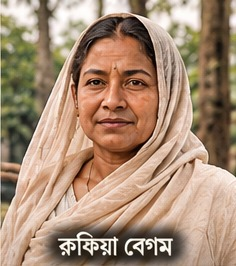
রুকিয়া বেগম মানিকজানের মা। সংসারের কাজের মধ্যে তিনি অতীতকে ধরে রাখেন। পুরোনো কাপড়, ঘরের জিনিসপত্র, রান্নার গন্ধ, পরিচিত কোনো অভ্যাস—এসবের মধ্যে তাঁর স্মৃতি বেঁচে থাকে। নতুন বসতিতে এসে তিনি ঘর গোছান, সংসার সাজান। কিন্তু ফেলে আসা জায়গার গন্ধ তাঁর মন থেকে মুছে যায় না। তাঁর হাতের কাজে ঘর ধীরে ধীরে আপন হয়ে ওঠে। তিনি সেই নারী, যাঁর স্মৃতির ভেতর দিয়ে একটি পরিবারের পুরোনো জীবন নতুন জায়গায় এসে আশ্রয় পায়।
কাদের
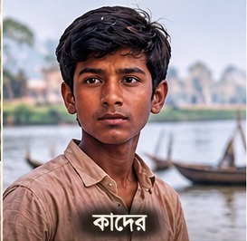
কাদের মানিকজানের ছোট ভাই। বয়সের তুলনায় তার কৌতূহল বেশি। গ্রামের মানুষের কথাবার্তা, নদীর চলাচল, বড়দের সিদ্ধান্ত—সবকিছু নিয়েই তার প্রশ্ন। সে জানতে চায়, কেন মানুষ ঘর ছেড়ে আসে, কেন কোনো নদী একসময় শুকিয়ে যায়, কেন বড়রা অনেক প্রশ্নের উত্তর দিতে চায় না। তার প্রশ্নের সব উত্তর মেলে না। তবু সে জানতে চাওয়া বন্ধ করে না। কাদেরের চোখে নতুন বসতির পৃথিবী প্রতিদিন নতুন করে ধরা দেয়।
আবু বক্কার বুড়ো
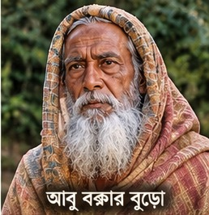
আবু বক্কার বুড়ো গ্রামের প্রবীণ মানুষ। একসময় তিনি ডাকাত দলের সর্দার ছিলেন। বয়সের শেষ দিকে হিজরত করে নতুন বসতিতে এসেছেন। গ্রামের মানুষ তাঁকে সম্মান করে। তাঁর কথায় পুরোনো দিনের অভিজ্ঞতা, লোকজ জ্ঞান, ভয় আর ভবিষ্যৎ সম্পর্কে নানা ইঙ্গিত মিশে থাকে। তিনি মানুষের স্বভাব বোঝেন। কখনো অল্প কথায় এমন কিছু বলে বসেন, যার অর্থ পরে গিয়ে স্পষ্ট হয়। তাঁর স্মৃতির ভেতর দিয়ে গ্রামের মানুষ অতীতের অনেক অচেনা পথের সন্ধান পায়।
রফা বয়াতী
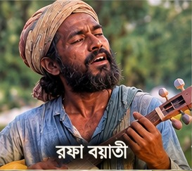
রফা বয়াতী গান করেন। তিনি ভবের ফকির। তাঁর গানে নদী, মানুষের দুঃখ, বিচ্ছেদ, হারানো জীবন আর অচেনা আগমনের কথা উঠে আসে। তাঁকে ঘিরে মানুষের বিশ্বাস, তিনি ভবিষ্যতের কিছু আভাস পেতে পারেন। সন্ধ্যার পর তাঁর কণ্ঠস্বর দূর থেকে ভেসে এলে গ্রামের পরিচিত পরিবেশেও অদ্ভুত এক আবহ তৈরি হয়। তাঁর গান মানুষের মনে এমন কিছু ছবি আঁকে, যা চোখে দেখা যায় না, অথচ সহজে ভোলা যায় না।
গোলাম আলী
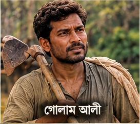
গোলাম আলী শ্রমিক। কাঠের কাজের সঙ্গে তাঁর জীবন জড়িয়ে। ছুরি, কাঠ আর আগুন তাঁর কাজের সঙ্গী। নতুন বসতি গড়ে উঠলে ঘর তৈরির কাজে তাঁর মতো মানুষের প্রয়োজন হয়। দিনের পর দিন পরিশ্রম করে তিনি মানুষের প্রয়োজন মেটান। তাঁর হাতের কাজের মধ্যে থাকে জীবিকার তাগিদ, আর শরীরে জমে থাকে শ্রমের ক্লান্তি। জনপদের ঘরবাড়ি দাঁড়িয়ে ওঠার পেছনে তাঁর মতো মানুষের হাতের ছাপ রয়ে যায়।
হুকুম আলী
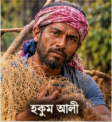
হুকুম আলী জাল ও নদীর কাজের মানুষ। মাছ ধরার জাল তৈরি করা, ছেঁড়া অংশ সেলাই করা, নদীর জীবিকার সঙ্গে যুক্ত নানা কাজ তাঁর দিন কাটায়। জালের সুতো টানতে টানতে তিনি যেন সময়ের ছেঁড়া অংশ জোড়া লাগান। নদীর সঙ্গে মানুষের যে প্রতিদিনের লেনদেন, হুকুম আলী তারই একজন পরিচিত মুখ।
কালু
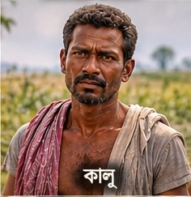
কালু শ্রমিক। তার হাতে দড়ি, কাঁধে জোয়ালের ভার। বোঝা টানা, মালপত্র সরানো, কঠিন কাজে হাত লাগানো—এসবই তার প্রতিদিনের জীবন। কাজের ডাক এলে সে এগিয়ে যায়। দড়ির টান ও ভারী বোঝার সঙ্গে তার শরীরের সম্পর্ক দীর্ঘদিনের। তার জীবন দিয়ে দেখা যায়, একটি নতুন জনপদ গড়ে তোলার পেছনে কত মানুষের শ্রম জমা থাকে।
যদুমণি
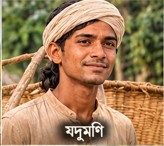
যদুমণি নতুন বসতি গড়ে তোলা পরিবারের একজন। নতুন উঠোন, ঘরবাড়ি, চুলা আর সংসারের প্রয়োজনীয় আয়োজনের সঙ্গে তার উপস্থিতি জড়িয়ে আছে। যে জায়গায় আজ ঘর উঠছে, সেখানে কাল শিশুরা খেলবে, সন্ধ্যায় রান্নার ধোঁয়া উঠবে, বর্ষায় জমবে কাদা। যদুমণির পরিবারের বসতি গড়ার মধ্য দিয়ে হিজরত করে আসা মানুষের নতুন জীবন শুরু হওয়ার ছবি দেখা যায়।
আমেনা
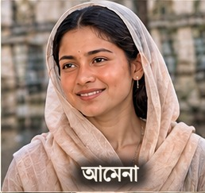
আমেনা মানিকজানের সমবয়সী সখি। তাদের বন্ধুত্বের মধ্যে আছে বয়সের স্বাভাবিক সরলতা, গোপন কথা, হাসি ও অভিমান। পাশাপাশি বসে গল্প করা, কোনো ঘটনায় হেসে ওঠা, বড়দের চোখ এড়িয়ে নিজেদের কথা বলা—এসব ছোট ছোট মুহূর্তে তাদের সম্পর্ক গড়ে ওঠে। মানিকজানের জীবনে আমেনা এমন একজন, যার কাছে সে নিজের মনের কথা সহজে প্রকাশ করতে পারে।
ইছুফ
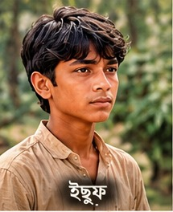
ইছুফ কিশোর। তার গোঁফে সদ্য কৈশোরের ছাপ পড়েছে। সে বড়দের জগৎকে কাছ থেকে দেখে, তাদের কথা শোনে, কাজকর্ম লক্ষ করে। নিজের বয়স পেরিয়ে একটু বড় হয়ে ওঠার আগ্রহ তার মধ্যে আছে। আবার কিশোরসুলভ কৌতূহলও তাকে ছাড়ে না। গ্রামের পরিবর্তনশীল জীবনে সে নতুন প্রজন্মের একটি মুখ।
দেনছে আলী
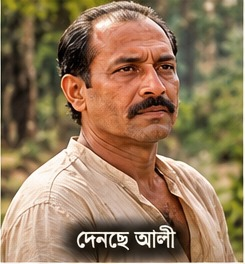
দেনছে আলীর বয়স আটচল্লিশ। তিনি শ্রমিক। দীর্ঘদিনের কাজের অভিজ্ঞতা তাঁর শরীর ও চলাফেরায় ছাপ ফেলেছে। নতুন বসতি গড়ে তোলা কিংবা দৈনন্দিন প্রয়োজন মেটানোর কাজে তাঁর মতো মানুষের শ্রম লাগে। তাঁর জীবন খুব সাধারণ কাজের মধ্যে দিয়ে এগিয়ে চলে। সেই কাজের মধ্যেই জমে থাকে জীবিকার কঠিন হিসাব।
নসু জাইল্যা
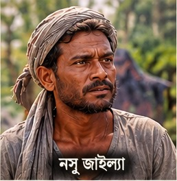
নসু জাইল্যার বয়স পঁয়তাল্লিশ। তেরো নৌকার হিজরতের পর তিনি বিঘাইয়ে এসে পৌঁছেছেন। পেশায় জেলে। গায়ের রং কালো, স্বভাব সরল। নিজের সামর্থ্য নিয়ে তাঁর মনে সংশয় থাকে, মানুষের সামনে আত্মবিশ্বাসও কম। কিন্তু মাছ ধরা ও নদীর জীবন সম্পর্কে তাঁর অভিজ্ঞতা আছে। নদী তাঁর জীবিকার জায়গা, আবার প্রতিদিনের বেঁচে থাকারও অবলম্বন।
শতীস ডাক্তার
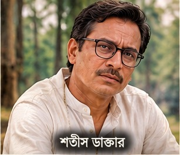
শতীস ডাক্তার বহুদিন ধরে বিঘাইয়ে বসবাস করছেন। গ্রামের মানুষের অসুখ-বিসুখে তিনি চিকিৎসা করেন। তাঁর পূর্বপুরুষও হিজরত করে এই অঞ্চলে এসেছিলেন। গ্রামের মানুষ তাঁকে শ্রদ্ধা করে। তিনি জ্ঞানী, পরামর্শ দিতে জানেন, বিপদে মানুষের পাশে দাঁড়ান। অসুখের সময় ওষুধের জন্য কিংবা সংসারের বিপদে পরামর্শের জন্য মানুষ তাঁর কাছে আসে।
মোনাছেপ
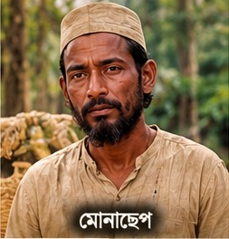
মোনাছেপ হিজরতকারী শ্রমিক। নতুন বসতিতে এসে তাঁর জীবন কাজের সঙ্গে জড়িয়ে গেছে। মজুরের কাজ করে তিনি জীবিকা চালান। পেছনে ফেলে আসা জায়গা, পুরোনো পরিচিত মানুষ আর হারিয়ে যাওয়া জীবনের স্মৃতি তাঁর সঙ্গে আছে। নতুন জনপদে নিজের জায়গা তৈরি করার চেষ্টায় তিনি প্রতিদিনের কাজ করে যান।
মেয়াসাব
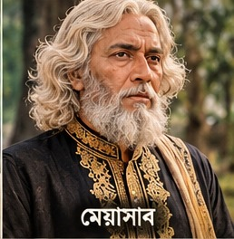
মেয়াসাবের বয়স ঊনষাট। তাঁর আসল নাম মফিজ উদ্দিন চৌধুরী। লম্বা দেহ, হাঁটু পর্যন্ত নেমে আসা দাড়ি ও বাবরি চুল তাঁর চেহারার পরিচিত বৈশিষ্ট্য। তিনি আরবি ও ফারসি জানেন। পশ্চিমের জৈলসা অঞ্চল থেকে তিন স্ত্রী ও পত্রপরিজন নিয়ে বিঘাইয়ে এসেছিলেন। শতবর্ষের জলমগ্ন বিল পরিষ্কার করে সেখানে চাষাবাদের ব্যবস্থা করেন। এভাবেই বিঘাইয়ের প্রথম পত্তনকারীদের একজন হিসেবে তাঁর নাম প্রতিষ্ঠিত হয়। এখন তিনি ভূস্বামী, নৌ-বাণিজ্যের ব্যবসায়ী এবং প্রভাবশালী ব্যক্তি। তাঁর দরবারে নানা মানুষ আসে, নানা প্রয়োজন নিয়ে।
হেক্কার
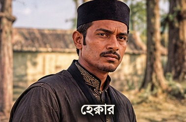
হেক্কারের বয়স পঁয়ত্রিশ। মাঝারি গড়নের এই মানুষটি মেয়াসাবের দরবারে থাকেন। নিজের অতীতের অনেক কিছুই তিনি ভুলে গেছেন। হয়তো কোনো বিদেশি জাহাজে কলকাতায় এসেছিলেন; পরে মেয়াসাব তাঁকে খুঁজে পেয়ে নিজের দরবারে নিয়ে আসেন। তাঁর অতীত সম্পর্কে নিশ্চিত কিছু জানা যায় না। তিনি শান্ত স্বভাবের, ভালো বক্তা ও গল্প বলতে পারদর্শী। তাঁর কথার ভেতর দিয়ে কখনো কখনো হারিয়ে যাওয়া স্মৃতির ছায়া দেখা যায়।
মারোয়ান
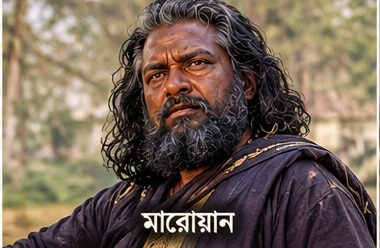
মারোয়ানের বয়স প্রায় বিয়াল্লিশ। তিনি মেয়াসাবের প্রধান সর্দার ও দেহরক্ষীদের অধিনায়ক। লম্বা-চওড়া, প্রকাণ্ড শরীরের অধিকারী এই মানুষটির চেহারায় ভয় ধরানো কঠোরতা আছে। নদীর ভূগোল তাঁর ভালো জানা। কোন পথে নৌকা চলবে, কোথায় স্রোত বিপজ্জনক, কোথায় জল কম—এসব তিনি জানেন। তিনি নিষ্ঠুর, হৃদয়হীন এবং কখনো হাসেন না। মেয়াসাবের আদেশ পালন করাই তাঁর কাজ।
জমিদার নির্মলকণ্ঠ রায়
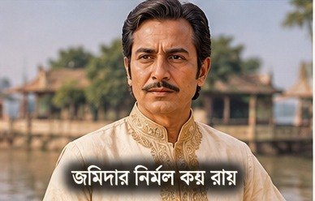
নির্মলকণ্ঠ রায় বিঘাই অঞ্চলে আগত জমিদার। জঙ্গলবাড়ি তালুকের জমিদারি স্বত্বের সঙ্গে তাঁর নাম যুক্ত। পশারীবুনিয়া গ্রামে তিনি কাছারি গড়ে তুলেছেন। জমিদারি ব্যবস্থার প্রশাসনিক উপস্থিতি, খাজনা আদায় ও ভূমির ওপর কর্তৃত্বের মধ্য দিয়ে তাঁর চরিত্র জনপদের ইতিহাসে প্রবেশ করে। বিঘাইয়ের মানুষের জীবনে জমিদারি ক্ষমতার যে প্রভাব পড়ে, নির্মলকণ্ঠ রায় সেই ক্ষমতার একজন প্রতিনিধি।
আজিমদ্দি তালুকদার
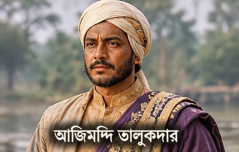
আজিমদ্দি তালুকদার বিঘাইয়ে আগত প্রথম তালুকদার। পত্তনি তালুকদার হিসেবে তাঁর নাম জনপদের ভূমি ও মালিকানার ইতিহাসের সঙ্গে জড়িয়ে আছে। জমির অধিকার, তালুকের সীমানা এবং নতুন বসতির ওপর কর্তৃত্ব প্রতিষ্ঠার যে প্রক্রিয়া, তার মধ্যে দিয়ে তাঁর চরিত্রের ভূমিকা তৈরি হয়। বিঘাইয়ের জমি ও মানুষের জীবন যখন নতুন প্রশাসনিক ও ভূমিস্বত্বের কাঠামোর মধ্যে প্রবেশ করছে, তখন আজিমদ্দি তালুকদার সেই পরিবর্তনের একজন গুরুত্বপূর্ণ ব্যক্তি।
একই জনপদের নানা মুখ
মানিকজান থেকে মেয়াসাব, হাচনদ্দি থেকে মারোয়ান, গোলাম আলী থেকে নির্মলকণ্ঠ রায়—প্রত্যেকের জীবন আলাদা পথে এগিয়েছে। কারও পৃথিবী নদীর ঘাটে, কারও উঠোনে, কারও দরবারে, কারও কাছারিতে। কেউ ভালোবাসার জন্য পথ পাড়ি দেয়, কেউ জীবিকার জন্য, কেউ জমির মালিকানা নিয়ে আসে, কেউ নতুন মাটিতে ঘর বাঁধে।
এই মানুষদের জীবন এক জায়গায় এসে মিশেছে বিঘাইয়ে। তাদের কথাবার্তা, কাজ, স্মৃতি, দ্বন্দ্ব ও আকাঙ্ক্ষার মধ্য দিয়েই চন্দ্রদ্বীপের জনপদ ধীরে ধীরে জীবন্ত হয়ে ওঠে।